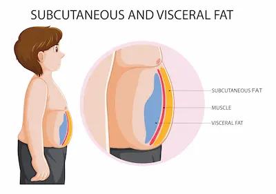

Obesidad abdominal: El peligro invisible (y cómo combatirla)
La Grasa Visceral: Un Órgano Tóxico Activo
La obesidad abdominal, particularmente la acumulación de grasa visceral, representa un riesgo significativo para la salud metabólica debido a su naturaleza endocrinológicamente activa. A diferencia de la grasa subcutánea, que funciona principalmente como almacén de energía, la grasa visceral secreta adipocinas proinflamatorias como la interleucina-6 y el factor de necrosis tumoral alfa, sustancias que contribuyen a la resistencia a la insulina y al estado inflamatorio crónico. Estudios de imagen por resonancia magnética han demostrado que incluso individuos con peso normal pero con exceso de grasa visceral presentan un riesgo cardiovascular equivalente al de personas con obesidad generalizada. Esta grasa profundamente arraigada alrededor de los órganos abdominales altera la función hepática, aumentando la producción de lipoproteínas de muy baja densidad (VLDL) que elevan los triglicéridos y reducen el colesterol HDL, creando así un perfil lipídico altamente aterogénico.
La medición precisa de esta grasa peligrosa va más allá del índice de masa corporal (IMC), requiriendo métodos como la circunferencia de cintura (valores de riesgo >94 cm en hombres y >80 cm en mujeres) o la relación cintura-cadera (>0.90 en hombres y >0.85 en mujeres indica riesgo metabólico elevado). Investigaciones longitudinales como el estudio Framingham Heart Study han establecido que cada incremento de 5 cm en la circunferencia de cintura aumenta el riesgo de mortalidad cardiovascular en un 17%, independientemente del IMC, destacando la importancia crítica de monitorear específicamente esta zona.
Estrategias Basadas en Evidencia para Reducir la Grasa Abdominal
La reducción efectiva de la grasa visceral requiere intervenciones multifacéticas que combinen nutrición de precisión, actividad física específica y manejo del estrés. Desde la perspectiva nutricional, las dietas moderadamente bajas en carbohidratos (30-40% del total calórico) pero altas en fibra soluble (25-30g/día) han demostrado superioridad para movilizar la grasa abdominal, según metaanálisis publicados en el American Journal of Clinical Nutrition. La fibra soluble forma un gel viscoso en el tracto intestinal que reduce la absorción de grasas y modula positivamente la microbiota intestinal, afectando la expresión génica relacionada con el almacenamiento de grasa visceral. Alimentos como aguacates, semillas de chía, legumbres y bayas son particularmente efectivos para este propósito.
El entrenamiento por intervalos de alta intensidad (HIIT) emerge como la modalidad de ejercicio más efectiva para atacar específicamente la grasa abdominal. Un estudio del Journal of Obesity reveló que 12 semanas de HIIT (3 sesiones semanales de 20 minutos) redujeron la grasa visceral un 17% más que el ejercicio aeróbico tradicional, probablemente debido a su mayor efecto sobre la sensibilidad a la insulina y la liberación de catecolaminas que movilizan los ácidos grasos. Sin embargo, el componente más subestimado es el manejo del cortisol: técnicas de reducción de estrés como la respiración diafragmática profunda (6 ciclos/minuto durante 10 minutos diarios) pueden disminuir la acumulación de grasa abdominal relacionada con el estrés hasta en un 25%, según investigaciones de la Universidad de California.
El Impacto del Sueño y el Estrés en la Acumulación de Grasa Visceral
La ciencia ha demostrado que la calidad del sueño y los niveles de estrés crónico juegan un papel fundamental en la acumulación de grasa abdominal. Estudios del sueño revelan que personas que duermen menos de 6 horas por noche tienen un 30% más probabilidad de desarrollar obesidad abdominal, independientemente de su dieta o nivel de actividad física. Esto ocurre porque la privación del sueño altera el equilibrio hormonal: aumenta los niveles de grelina (hormona del hambre) en un 15% y disminuye la leptina (hormona de la saciedad) en un 20%, creando un ambiente metabólico propicio para el almacenamiento de grasa visceral. Además, el sueño profundo insuficiente reduce la actividad del sistema glinfático, responsable de limpiar toxinas metabólicas que pueden contribuir a la resistencia a la insulina.
El estrés crónico activa el eje hipotálamo-hipófisis-adrenal, elevando los niveles de cortisol de manera persistente. Investigaciones con imágenes por PET muestran que el cortisol dirige específicamente el almacenamiento de grasa hacia la región abdominal, donde las células adiposas tienen cuatro veces más receptores de cortisol que en otras áreas del cuerpo. Técnicas como la meditación mindfulness (30 minutos diarios) y la respiración diafragmática (6 ciclos por minuto) han demostrado reducir los niveles de cortisol en un 25% y la circunferencia de cintura en un 3-5 cm en estudios controlados de 8 semanas.
Suplementación y Fármacos con Evidencia Científica
Ciertos compuestos naturales y medicamentos han mostrado eficacia específica para reducir la grasa visceral cuando se combinan con cambios en el estilo de vida:
- Ácidos grasos omega-3 (EPA/DHA): Dosis de 2-3g/día han demostrado reducir la grasa visceral en un 15-20% en estudios de 6 meses, al inhibir la diferenciación de preadipocitos en adipocitos maduros.
- Probióticos específicos (L. gasseri, B. breve): Cepas particulares pueden reducir la circunferencia de cintura en 1.5-2 cm en 12 semanas al modular la microbiota intestinal relacionada con la absorción de grasas.
- Metformina: Este fármaco para diabetes en dosis bajas (500mg/día) ha mostrado beneficios en no diabéticos, reduciendo la grasa visceral en un 6-9% al mejorar la sensibilidad a la insulina.
Es crucial destacar que estos complementos deben usarse bajo supervisión médica y como coadyuvantes, no como soluciones mágicas. Un estudio de la Clínica Mayo encontró que los suplementos sin cambios en el estilo de vida solo produjeron reducciones marginales del 2-3% en grasa abdominal.